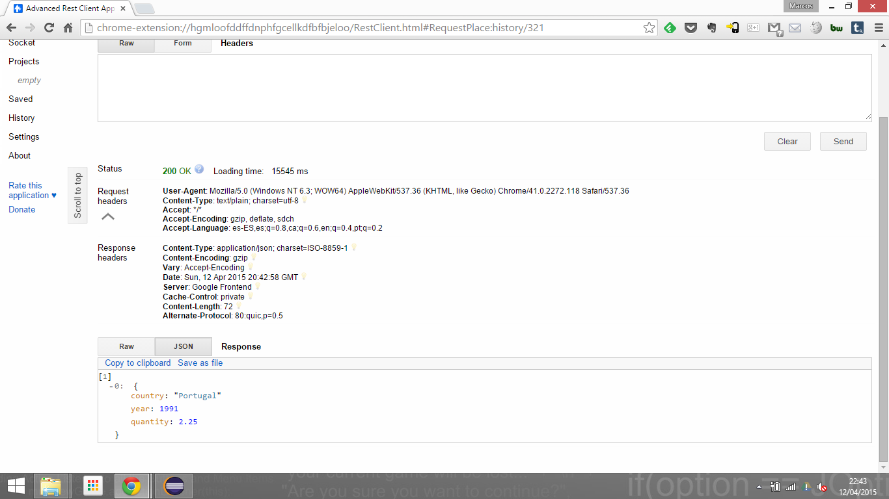

Se han diseñado para dos recursos muy parecidos dos APIs distintas para su uso.
La primera de estas APIs es la que más respeta el funcionamiento de las APIRestfull, y la que primero propuso Pablo Fernández para hacer. Visto que daba para poco juego la parte concerniente a los datos, ya que parte de los propios datos pertenecen a la "estructura de urls APIs", se optó por generar una segunda API.
Nuestros recursos son la emisión de co2 de cada país (api/v1/co2 o api/v2/co2) y la inversion en dichos paises desde paises más desarrollados (api/v1/countriesinversions o /api/v2/countriesinversions)
Estamos a la espera de que Pablo nos indique que API manejar para nuestro proyecto, ya que no tuvo tiempo de contestar el correo que le enviamos; en cuanto se opte por una de las dos, descartar la otra es trivial
AVISO: Si existiese algún posible bug, es de seguro fácilmente solventable ya que actualmente conviven ambas APIs y se ha intentado la mayor compatibilidad. La API v1 va creando la información por fases (tal y como nos lo dijo Pablo en su primera versión). La API v2 la crea de golpe respetando lo que nos informó Pablo de que siempre nos llegará al servidor una tupla, y devolveremos tuplas.
Esta API va a ir creando los objetos poco a poco. Primero habrá que hacer un POST del país, luego otro POST en la "subcarpeta" del pais para introducir el año, y luego un PUT en dicho año.
Aquí siempre vamos a pasar tuplas completas en JSON con campos country, year y quantity para co2, y country, year e inversion para countriesinversions
Gráficamente podemos ver:
DELETE sobre la api v2 (es exatamente el mismo que sobre V1) que borra TODO el contenido de co2
GET sobre v2, con todo vacío
POST sobre v2 en co2, incluyendo datos y su código 200OK.
Resultado del POST
Otro POST cambiando el año, desde /Portugal, ya que como indicó Pablo, tanto desde / como desde /Portugal se pueden realizar las mismas operaciones POSTs
PUT para modificar los resultados
GET de los paises desde la api v1. En ella sólo se muestra la lista de paises. Si hacemos GET sobre un pais se mostrará la lista de años disponibles. Si se hace otro GET sobre un /pais/año se mostrarán los datos filtrados
En la V2 sin embargo, se mostrarán siempre en / todas las tuplas, en /pais, todas las tuplas de dicho pais (incluyendo) el país como primer dato, y en /pais/año se mostrará la única tupla que corresponda a dicha combinación
POST de un país en la V1
POST de un año para un país dado en V1
PUT del dato para un año y un pais en V1
Como las APIs son compatibles totalmente, podemos ver los datos con el GET de v2
Los campos con -1 pertenecen, y no interfieren con V2, a la forma en que se van generando temporalmente y paso a paso los datos de la API v1 (por fases)